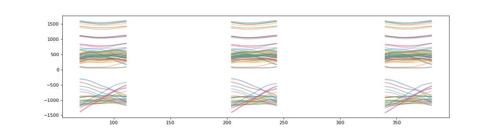

Feature Inclusion¶
There may be a case where an original dataset has multiple features, but only a subset of these features are wanted to be included in the segmentation process.
>>> import numpy as np
>>> import matplotlib.pylab as plt
>>> import seg1d
>>> #retrieve the sample reference, target, and weight data
>>> r,t,w = seg1d.sampleData(c=0.5)
Note: The reference data shown here is centered at 0 on the y axis (vertical). As the algorithm process is based on the shape of the curve, it is irrelevant what this offset is.
>>> # plot reference data
>>> plt_r = np.asarray( [ x for y in r for x in y.values() ] ).T
>>> plt.figure(figsize=(3,3))
>>> plt.plot(plt_r,alpha=0.3)
>>> plt.show()
>>> # plot target data
>>> plt_t = np.asarray( [ x for x in t.values() ] )
>>> plt.figure(figsize=(15,4))
>>> plt.plot(plt_t.T,alpha=0.5)
>>> plt.show()

>>> #Make an instance of the segmenter
>>> s = seg1d.Segmenter()
>>> #set scaling parameters
>>> s.minW,s.maxW,s.step = 98, 105, 1
>>> #Set target and reference data
>>> s.t, s.r, s.w = t,r,w
>>> #call the segmentation algorithm
>>> segments = s.segment()
>>> print(np.around(segments,decimals=7))
[[204. 245. 0.7128945]
[ 70. 112. 0.6670482]
[340. 382. 0.6630886]]
>>> plt_t = s.t_masked #get a NaN masked array of the target data
>>> # plot masked target
>>> plt.figure(figsize=(15,4))
>>> plt.plot(plt_t.T,alpha=0.5)
>>> plt.show()

To use a subset of the features, the weights can be redefined, which may result in a different segmentation result
>>> sub = [('C7','z'),('T10','z'),('CLAV','z')]
>>> s.w = { x: w[x] for x in sub }
>>> segments = s.segment()
>>> print(np.around(segments,decimals=7))
[[ 2. 44. 0.9648465]
[341. 383. 0.9646419]
[203. 244. 0.9644605]
[273. 314. 0.9640178]
[ 72. 113. 0.9632458]
[139. 180. 0.9624551]]
>>> plt_t = s.t_masked #get a NaN masked array of the target data
>>> # plot masked target
>>> plt.figure(figsize=(15,4))
>>> plt.plot(plt_t.T,alpha=0.5)
>>> plt.show()